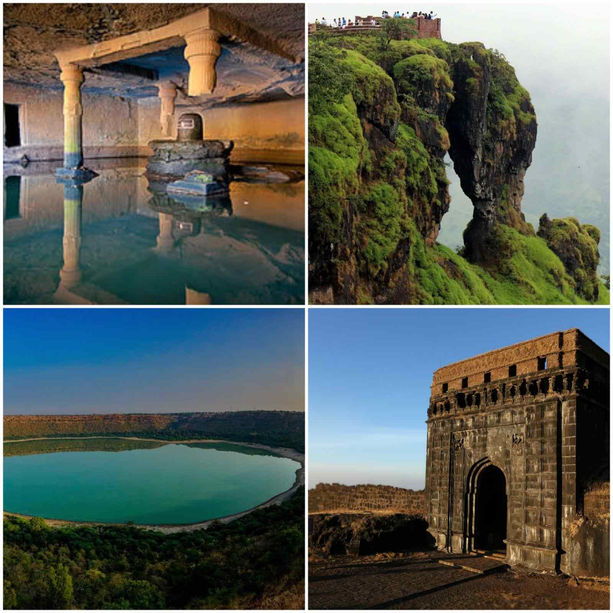

Mumbai
Mumbai (formerly called Bombay) is a densely populated city on India’s west coast. A financial center, it's India's largest city. On the Mumbai Harbour waterfront stands the iconic Gateway of India stone arch, built by the British Raj in 1924. Offshore, nearby Elephanta Island holds ancient cave temples dedicated to the Hindu god Shiva. The city's also famous as the heart of the Bollywood film industry.

Chh sambhajiNagar
Aurangabad is a city in Maharashtra state, in India. It’s known for the 17th-century marble Bibi ka Maqbara shrine, styled on the Taj Mahal. The nearby Shivaji Maharaj Museum, dedicated to the Maratha king Shivaji, displays war weapons and a coin collection. North of the city, the Aurangabad Caves comprise ancient, rock-cut Buddhist shrines. West of the city, battlements surround the medieval Daulatabad Fort.

Pune
Pune is a sprawling city in the western Indian state of Maharashtra. It was once the base of the Peshwas (prime ministers) of the Maratha Empire, which lasted from 1674 to 1818. It's known for the grand Aga Khan Palace, built in 1892 and now a memorial to Mahatma Gandhi, whose ashes are preserved in the garden. The 8th-century Pataleshwar Cave Temple is dedicated to the Hindu god Shiva.

Nashik
Nashik is an ancient holy city in Maharashtra, a state in western India. It’s known for its links to the “Ramayana” epic poem. On the Godavari River is Panchavati, a temple complex. Nearby, Lord Rama was thought to have bathed at Ram Kund water tank, today attended by Hindu devotees. Shri Kalaram Sansthan Mandir is an ancient shrine to Rama, while Rama and Sita are said to have worshipped at Sita Gufaa caves.
Kolhapur
Kolhapur is a city on the banks of the Panchaganga River, in the west Indian state of Maharashtra. It’s known for its temples, like the ancient Mahalakshmi Temple, a Hindu pilgrimage site. The Bhavani Mandap is an imposing old palace with a small museum displaying stuffed wild animals. Close by, Rankala Lake is surrounded by gardens. The hilltop Jyotiba Temple complex is on the city's outskirts.

Nagpur
Nagpur is a large city in the central Indian state of Maharashtra. The 19th-century Nagpur Central Museum displays items found locally, including fossils, sarcophagi and Mughal weaponry. The Raman Science Centre has hands-on exhibits and a planetarium. Sitabuldi Fort, in the Sitabuldi Hills, was the site of an 1817 battle. To the southwest, the immense, domed Deekshabhoomi is a Buddhist monument and pilgrimage site.
konkan
The Konkan is a stretch of land by the western coast of India, bound by the river Daman Ganga at Damaon in the north, to Anjediva Island next to Karwar town in the south; with the Arabian Sea to the west and the Deccan plateau to the east.

Explore more !
Discover more hidden treasures in our state, where every corner tells a unique story. From scenic landscapes to vibrant cities, there's an adventure waiting for every explorer. Immerse yourself in local culture, savor diverse cuisines, and unravel the history that shapes our extraordinary state. Pack your bags and dive into a journey of endless exploration, where each place reveals its own charm. There's always more to see and experience, so start your adventure today.